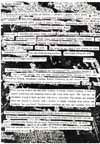

Forum is an ongoing discussion site focussed on one particular question per issue proposed by revolving guest editor/s who will conceive of the question and invite specific respondees as well as selecting from reader responses. Other readers are invited to reply with their written views of the announced FORUM question; those views will be considered for publication in this section and may be e-mailed to the FORUM editor. FORUM remarks will, in most cases, be excerpted if included and will be chosen with an eye for introducing new points-of-view that have not yet been expressed. This issue's editor is Wendy Tronrud.
The FORUM question for issue 3 is posed by Wendy Tronrud: What may it mean to locate oneself as both a reader and a writer of a graphically oriented and movable text (hypertext) within the parameters of cyberspace. The change in medium from book to cyberspace undoubtedly alters the physical experience of creating and finding meaning. The hypertext is an image linked within the greater structure of cyberspace. As readers, we not only read these images, but are capable of watching them perform.
In the essay "Virtual Topographies,"* Mark Nunes states that the hypertext is "not the writing of a place, but rather the writing with places, spatially realized topics." In the striated space of cyberspace, how may the hypertext rearticulate the textual landscape? If writing a hypertext also includes visually writing its architecture of place within the virtual medium of cyberspace, how may the act of writing and reading be rearticulated? Does this change in medium also effect our notion of stable spaces and is it perhaps envisioning a virtual city in which textual language acts as a structuring component? If so, how can we, as writers and readers, locate ourselves within this transphysical city of language?
*Cyberspace Textuality. Ed. Marie-Laure Ryan. Bloomington: Indiana University Press, 1999.
Wendy Tronrud tronik@hotmail.com.
BIO:
Wendy Tronrud graduated from Barnard College in 1998. She now lives in
NYC. This is her second contribution to How2.
Click here to read FORUM Question for H2/n4
Enter HOW2 Forum
Goto: The Scraps and Skin of Cyberspace
|

|
Guest editors for H2/n4, Mytili Jagannathan and Elisabeth Joyce, propose questions on stylistic experimentation in critical writing. Your e-mail response is invited -- from 1 paragraph to 2 pages in length -- and, if selected for on-line inclusion, must be re/sent to the guest editors as an attached file, formatted in MAC/Word 5.1
Responses should be addressed to <ejoyce@erie.net> and <mytilij@english.upenn.edu>
Taking
risks in critical writing often seems impermissible for those of us seeking
jobs, tenure, promotion, and most telling, publication. At the same time,
many of us are fascinated by more experimental forms of expression and
desire to participate in critical writing that is more riveting, evocative,
and boldly playful, making use of innovations that are not only permitted
but often valorized in the poetry that we, as critics and readers, discuss.
Given the extreme pressures to publish in academia, most writers in academic
contexts feel compelled to conform to certain styles of writing, with
their attention focused especially on the audience of reviewers who ultimately
determine whether or not an article is eligible for publication in "juried"
and traditionally targeted print journals.
What are the risks and rewards of carrying the innovative project over into our forms of critical discourse? We are interested particularly in how this dilemma is experienced and negotiated by women in various stages of their professional and writing lives. What are the models of critical style available to us? Do women feel pressure to conform to certain styles in order to survive in this profession? If they do not, what makes it possible for them to write in another way? Is audience the determining factor for their style, and if so, how do they envision this audience? Is inclusion of the personal a taboo, an innovation, or has it been worn out by overuse? And, as importantly, how has the proliferation of online publications changed assumptions about public intellectual exchange, and transformed the parameters for critical dialogue?
(this issue's table of contents)